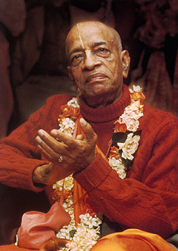

KARTIK YATRA 2021

Dear Devotees,
We are happy to announce that after a long wait we will finally be going for a Yatra in this month
of Kartik i.e Nov'2021 to Jagannath Puri & Mayapur
This is a Combo Double Mercy Yatra and Opportunity for all devotees to visit both the places
together and more in association of devotees. Specially His Grace Sitaram prabhu and His Grace Atul
Krishna prabhu.
Hence I encourage one and all to join us for this Yatra.
Kindly confirm your seat at the earliest, we have already started the process of reservation in at
both Locations and booking the train tickets also.
The brief schedule and Travel dates for the Yatra will be as follows
5th Nov - starting from respective location (Hyderabad, Mumbai, Bhiwandi etc)
6th Nov - Reaching Puri
7th - 9th Nov - Puri
9th Nov night start for Howrah
10th - 13th Nov - Mayapur
13th Nov night- start for respective locations Mumbai/Hyderabad/Bhiwandi🙏
Please fill in the below Google sheet to register yourself so that we have the requisite details.
LINK
For any queries, please feel free to contact
Pravin prabhu 9431280790
Varun prabhu 6355226431
Regards,
Ishan Gaur Das.
His Divine Grace A. C. Bhaktivedanta Swami Prabhupada

His Divine Grace A. C. Bhaktivedanta Swami Prabhupada was born in 1896 in Calcutta, India. He first
met
his spiritual master, Srila Bhaktisiddhanta Sarasvati Gosvami, in Calcutta in 1922. Bhaktisiddhanta
Sarasvati, a prominent devotional scholar and the founder of sixty-four branches of Gaudiya Mathas
(Vedic institutes), liked this educated young man and convinced him to dedicate his life to teaching
Vedic knowledge in the Western world. Srila Prabhupada became his student, and eleven years later
(1933)
at Allahabad, he became his formally initiated disciple.
At their first meeting, in 1922, Srila Bhaktisiddhanta Sarasvati Thakura requested Srila Prabhupada
to
broadcast Vedic knowledge through the English language. In the years that followed, Srila Prabhupada
wrote a commentary on the Bhagavad-gita and in 1944, without assistance, started an English
fortnightly
magazine.
Recognizing Srila Prabhupada’s philosophical learning and devotion, the Gaudiya Vaisnava Society
honored
him in 1947 with the title “Bhaktivedanta.” In 1950, at the age of fifty-four, Srila Prabhupada
retired
from married life, and four years later he adopted the vanaprastha (retired) order to devote more
time
to his studies and writing. Srila Prabhupada traveled to the holy city of Vrndavana, where he lived
in
very humble circumstances in the historic medieval temple of Radha-Damodara.
There he engaged for several years in deep study and writing. He accepted the renounced order of
life
(sannyasa) in 1959. At Radha-Damodara, Srila Prabhupada began work on his life’s masterpiece: a
multivolume translation and commentary on the 18,000-verse Srimad-Bhagavatam (Bhagavata Purana). He
also
wrote Easy Journey to Other Planets.
After publishing three volumes of Bhagavatam, Srila Prabhupada came to the United States, in 1965,
to
fulfill the mission of his spiritual master. Since that time, His Divine Grace has written over
sixty
volumes of authoritative translations, commentaries and summary studies of the philosophical and
religious classics of India.
In 1965, when he first arrived by freighter in New York City, Srila Prabhupada was practically
penniless. It was after almost a year of great difficulty that he established the International
Society
for Krishna Consciousness in July of 1966. Under his careful guidance, the Society has grew within a
decade to a worldwide confederation of almost one hundred asramas, schools, temples, institutes and
farm
communities.
In 1968, Srila Prabhupada created New Vrndavana, an experimental Vedic community in the hills of
West
Virginia. Inspired by the success of New Vrndavana, then a thriving farm community of more than one
thousand acres, his students founded several similar communities in the United States and abroad.
In 1972, His Divine Grace introduced the Vedic system of primary and secondary education in the West
by
founding the Gurukula school in Dallas, Texas. The school began with three children in 1972, and by
the
beginning of 1975 the enrollment had grown to one hundred fifty.
Srila Prabhupada also inspired the construction of a large international center at Sridhama Mayapur
in
West Bengal, India, which is also the site for a planned Institute of Vedic Studies. A similar
project
is the magnificent Krsna-Balarama Temple and International Guest House in Vrndavana, India. These
are
centers where Westerners can live to gain firsthand experience of Vedic culture.
Srila Prabhupada’s most significant contribution, however, is his books. Highly respected by the
academic community for their authoritativeness, depth and clarity, they are used as standard
textbooks
in numerous college courses. His writings have been translated into eleven languages. The
Bhaktivedanta
Book Trust, established in 1972 exclusively to publish the works of His Divine Grace, has thus
become
the world’s largest publisher of books in the field of Indian religion and philosophy.
In the last ten years of his life, in spite of his advanced age, Srila Prabhupada circled the globe
twelve times on lecture tours that have took him to six continents. In spite of such a vigorous
schedule, Srila Prabhupada continued to write prolifically. His writings constitute a veritable
library
of Vedic philosophy, religion, literature and culture.
Srila Prabhupada left us a veritable library of Vedic philosophy and culture. Highly respected by
scholars for their authority, depth, and clarity, his books are used at colleges and universities
around
the world.